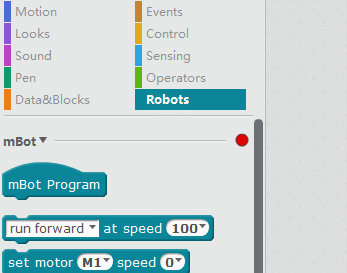

mBot y mBlock
Requisitos de conceptos previos
Es necesario haber realizado una FORMACIÓN BÁSICA EN SCRATCH la formación exclusiva de Scratch en Aularagón es suficiente.
Requisitos de material
Necesitas el kit de robótica mBot de MakeBlock que presta CATEDU o que lo puedes conseguir comprándolo en las tiendas ver ¿qué es mBot?
Este curso utilizará dos productos:
mBot con mochila de comunicación 2.4G. (La versión Bluetooth no es recomendable en el aula, pues provoca interferencias, es mejor que tenga la mochila 2.4G)
NOTA: Si no lo tienes montado, usa las Instrucciones del Kit mBot
Matriz de LEDS 8x16 donde aumentaremos la capacidad de interacción de nuestro simpático mBot.
Requisitos de software y Hardware
Instalar el mBlock en la página oficial de descarga mBlock http://www.mblock.cc/.
Disponible en diversos sistemas operativos y su instalación no presenta ningún problema.
- mBlock for PC: aconsejado para el aula, y recomendamos conexión 2.4G: Windows, Mac, Linus, ChromeOS,.
- mBlock for Mobile, que no aconsejamos para el aula porque necesita Bluetooth y se produce interferencias: Android, iPad .
Hemos probado mBlock en ordenadores viejos Windows XP (pero hay que descargarse la versión que recomienda para XP en http://www.mblock.cc/ y ha funcionado perfectamente. Es un programa que NO NECESITA INTERNET en su funcionamiento, por lo que se adapta a la realidad de todos los centros escolares.
Hay que destacar que en Windows, la primera vez que se quiere comunicar con el robot salta el Firewall de Windows bloqueándolo, pero mostrando un diálogo si se permite o no esta comunicación externa, clickar en PERMITIR.
Se actualiza muy a menudo, mejorando cada vez más sus prestaciones, lo que implica que su descarga es cada vez más pesada, más de cien megas, pero después prescinde de Internet.
El programa es muy sencillo si estás acostumbrado al SCRATCH :

Fuente: http://makeblock.es/
Qué curioso !
mBlock está basado en Scratch y simplemente ha añadido extensiones para trabajar mBot, pero también ha añadido extensiones para trabajar Arduino, no es capricho, es porque mBot es un Arduino con dos motores y sensores.
En CATEDU hemos experimentado distintas formas de programar el Arduino de forma sencilla para alumnos de primaria y encontramos mBlock como el mejor programa para hacerlo. Nuestros cursos de -Arduino utilizamos mBlock.

Menuda Feria 16-03-2019 por Javier Quintana Peiró - Equipo CATEDU bajo licencia Creative Commons Reconocimiento-NoComercial-CompartirIgual 4.0 Internacional License.